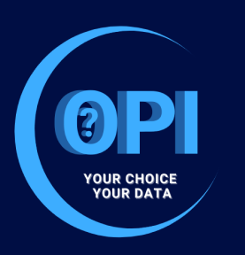
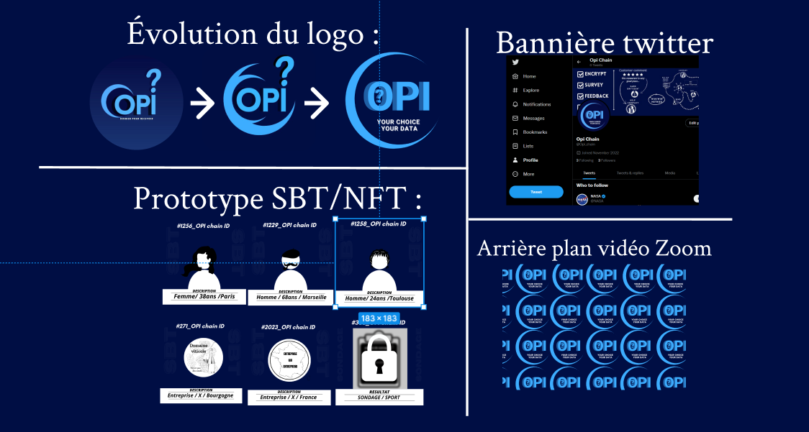
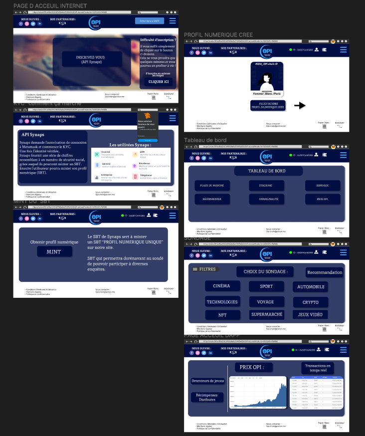
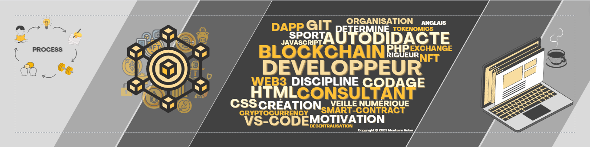
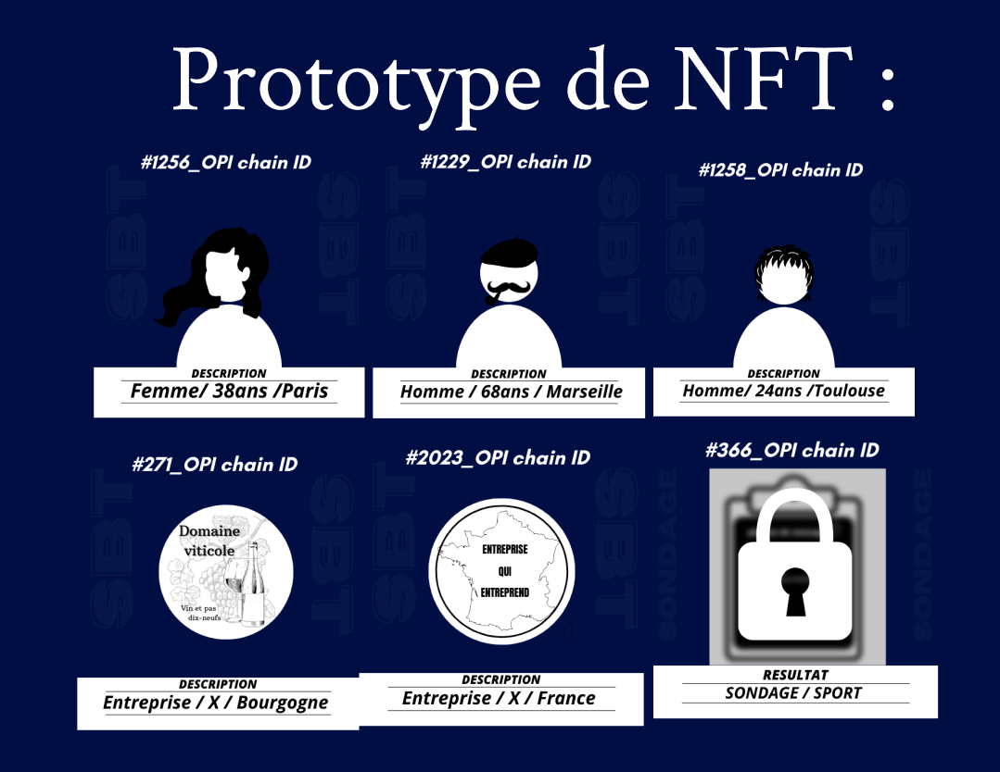
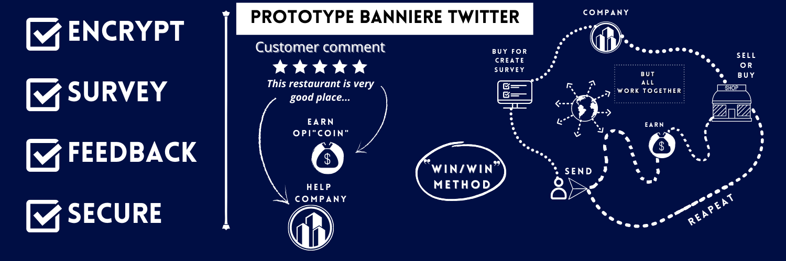
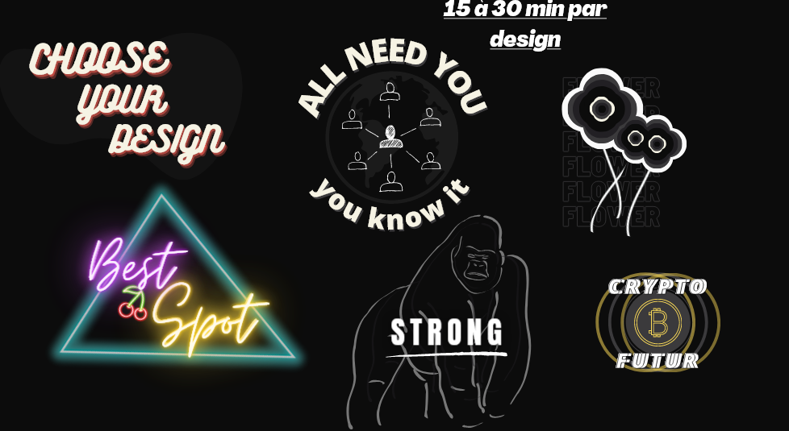

MON POINT DE VU
J'ai réalisé que la création de logo et d'images est un élément crucial pour les marques et les entreprises. Elle permet de se représenter de manière simple et efficace, tout en laissant une impression durable dans l'esprit des consommateurs.
En m'intéressant de plus près à cette thématique, j'ai découvert l'impact que les détails tels que les couleurs, la police d'écriture et le design peuvent avoir sur les émotions et les perceptions des gens.
C'est pourquoi, j'ai commencé à créer des logos, dans le but de réfléchir sur ces sujets de fonds, comprendre la réflexion commune et d'exprimer ma créativité.



DESIGN OPI :
Le logo représente un jeton OPI en 3/4 de vue, pour rappel le projet OPI est lié à la crypto-monnaie
(cf lien détail du projet). Les couleurs utilisées sont le bleu foncé, qui apporte de la sécurité et
de la confiance, et le bleu électrique, qui symbolise l'innovation. Le blanc du slogan permet une
meilleure lisibilité et reflète nos valeurs de transparence.
Concernant le parcours utilisateur, la simplicité et l'intuitivité sont des éléments-clés pour
attirer les utilisateurs. Je me suis également concentré sur l'essentiel afin d'offrir une
expérience utilisateur fluide et agréable.
De plus, j'ai réalisé quelques "SBT/NFT", pièces nécessaires au visuel du parcours client ainsi
qu'au développeur web de l'équipe pour son speech
CRÉATIONS (Via Canva)



